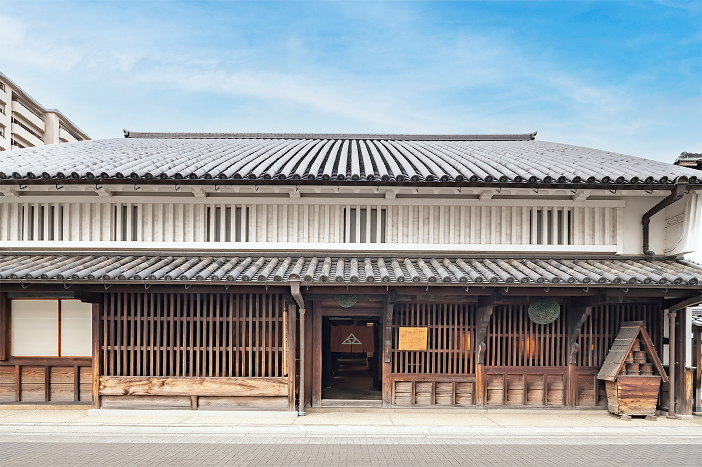
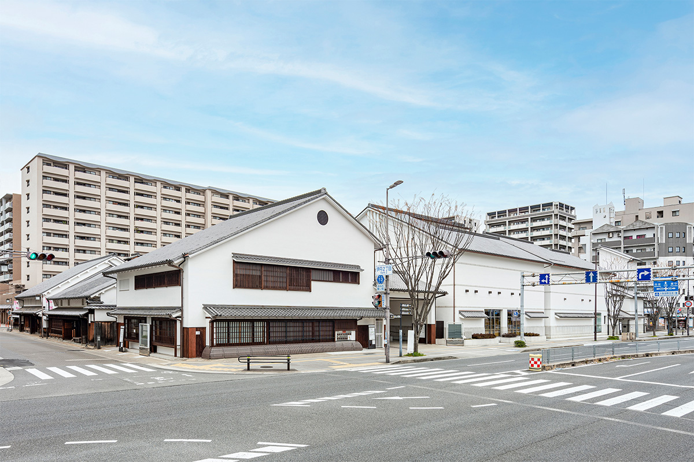
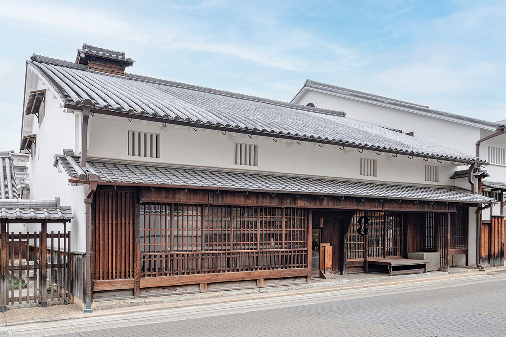
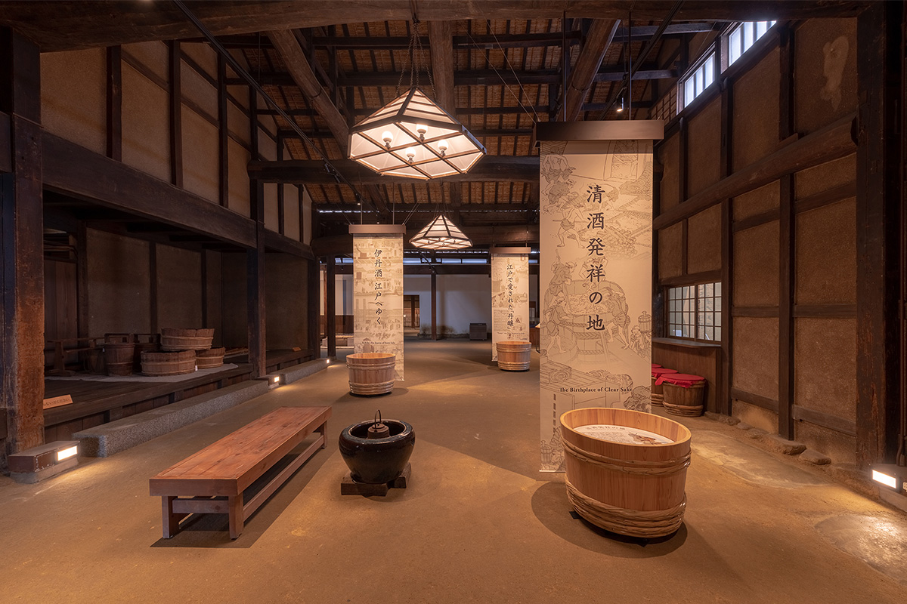
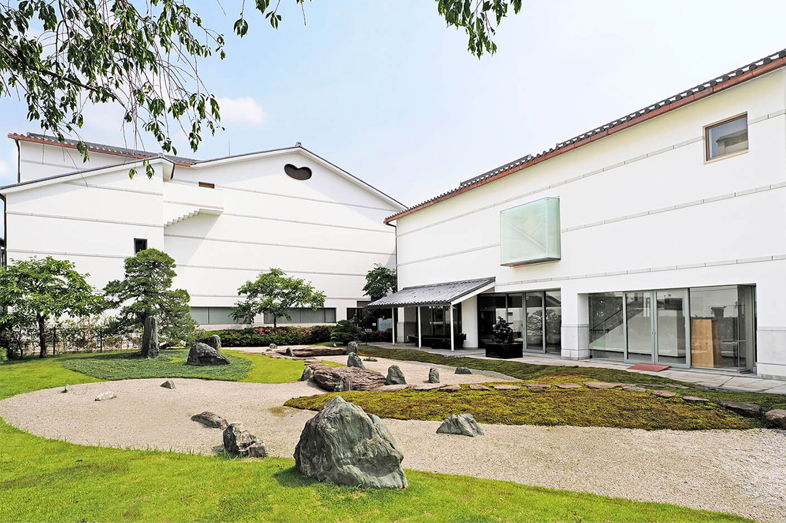
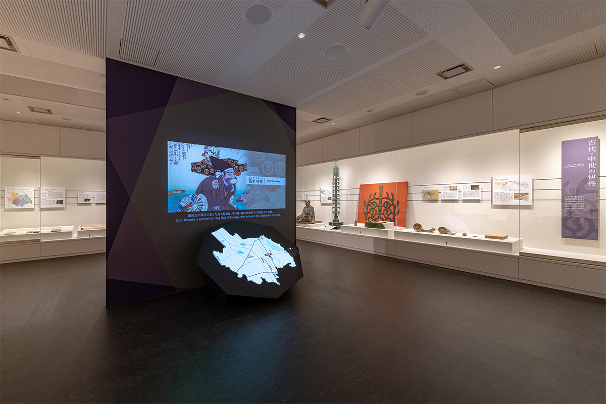
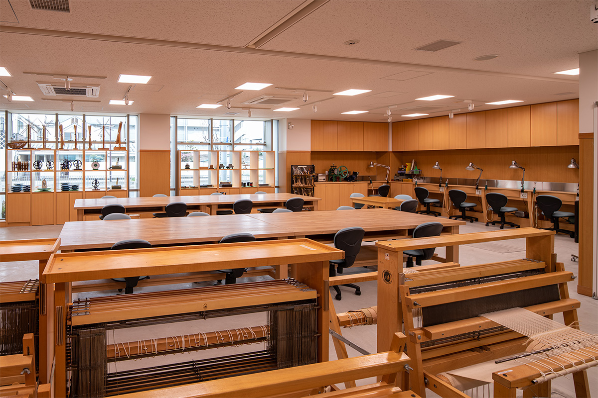
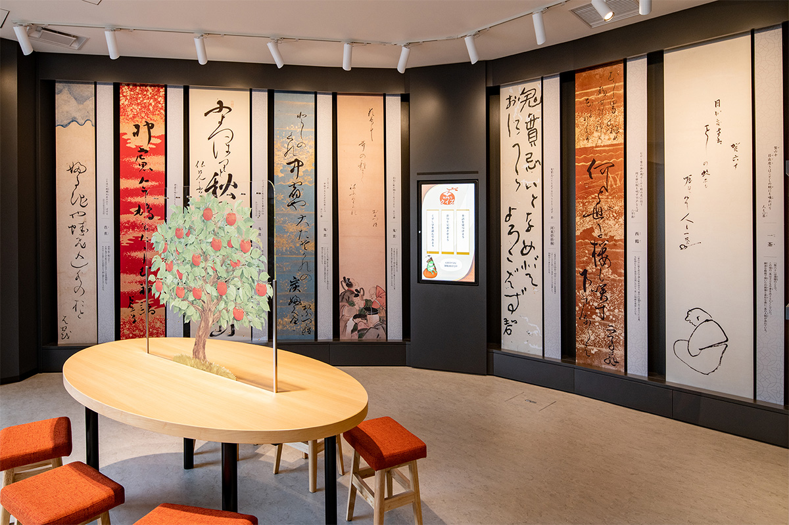
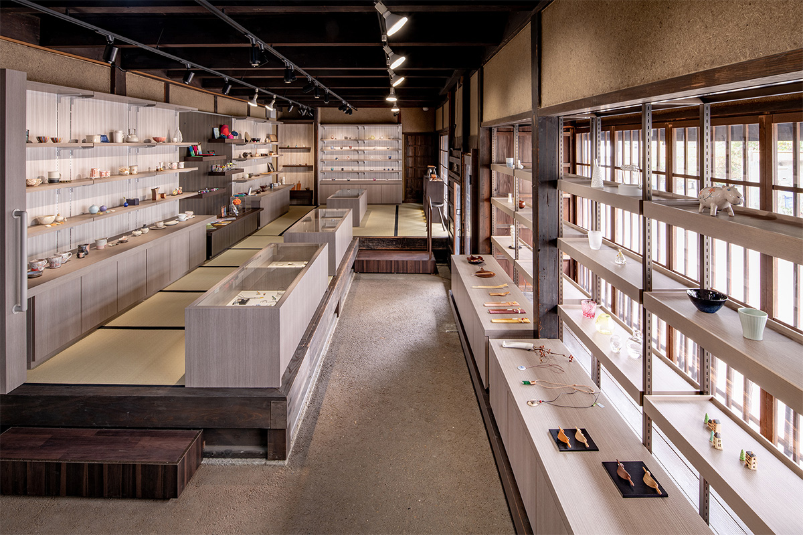

Префектура Хёго · Итами · музей
Городской музей Итами: дом сакэвара XVII века, старая лавка и сад Канто Сигэмори

Итами в эпоху Эдо славился сакэ, и сюда охотно приезжали поэты и художники. В 2022 году пять культурных учреждений города стали одним музеем, где рядом стоят дом сакэвара XVII века, старая лавка, новые выставочные залы и сад.
Город
Пять учреждений под одной крышей
Итами лежит на юго-востоке префектуры Хёго, примерно в 20 км от Кобе и в 10 км от Осаки. В эпоху Эдо город богател на сакэ, а его слава места, где ценят литературу и искусство, привлекала сюда поэтов и художников.
Нынешний музей вырос из целого культурного квартала в центре Итами, в районе Мияномаэ. В 1984 году здесь открылась библиотека-музей «Какимори-бунко», посвящённая поэзии хайкай. Через три года к её зданию пристроили городской художественный музей, в 1989 году рядом заработал городской центр ремёсел, а в 2001 году к ним добавились два городских дома эпохи Эдо, которые принадлежали семьям Окада и Исибаси. Местные жители называли это место культурным кварталом Мияномаэ.

В апреле 2022 года к четырём учреждениям присоединили городской исторический музей, и все пять стали одним «Городским музеем Итами». Кроме двух старых домов в нём шесть выставочных залов на трёх уровнях, от подвала до второго этажа, японский сад, мастерская, уголок поэзии хайкай и хайку и ремесленная лавка. Здесь показывают не только живопись, но и ремёсла, поэзию и историю города. Сокращённое название музея «I/M» звучит по-английски как «я есть»: создатели хотели, чтобы и горожане, и гости считали его своим.
Осенью 2022 года, с 10 сентября по 6 ноября, музей показывал выставку о том, как архитектор Кэнго Кума проектировал новое здание мэрии Итами.
Архитектура
Два дома эпохи Эдо
Лавка семьи Исибаси

Дом семьи Исибаси построили в конце эпохи Эдо, и он почти не изменился с тех пор. На фасаде большая подъёмная дверь, откидная скамья, на которой когда-то раскладывали товар, и выступающие деревянные решётки. Над лавкой низкий второй этаж с четырьмя узкими решётчатыми окошками, а белая штукатурка доходит до самого карниза. За сохранившийся облик старой лавки в 2001 году дом внесли в список культурных ценностей префектуры.
По семейному преданию, в конце XVII века основатель рода открыл в соседней деревне лавку, где продавалось всё понемногу. Позже семья перебралась ближе к центру, а после 1868 года торговала бумагой и скобяными товарами и заодно варила сакэ. Потом Исибаси держали лавку хозяйственных мелочей.
Дом сакэвара семьи Окада
Дом семьи Окада устроен как маленькая винокурня: впереди лавка, в глубине склад для сакэ, а между ними кухня с котлами и мойка. Лавку построили в 1674 году, склад примерно в 1715 году, а кухню и мойку в конце эпохи Эдо, и с тех пор их не раз перестраивали. По старым документам и надписи на камне фундамента считают, что дом построил сакэвар Ёбэй Мацуя.
В 1729 году склад перешёл к другому владельцу, а в эпоху Мэйдзи (1868–1912) через несколько рук достался семье Окада. До 1984 года здесь варили сакэ: склад служил северным цехом компании «Отэгара».

Дом Окада старейший городской дом Итами и один из немногих в Японии, что сохранились с XVII века. Он охраняется государством как важная культурная ценность и напоминает о временах, когда Итами был одной из столиц сакэ. Оба дома открыты, вход в них бесплатный: внутри можно вблизи рассмотреть откидную скамью, решётки и другие детали старых лавок.
Сад
Белый песок вместо воды

Сад при музее спроектировал Канто Сигэмори (1923–1992), один из самых известных садовых мастеров Японии, а позже его частично перестроил сын, Тисао Сигэмори.
Канто Сигэмори начал с воды, которая издавна течёт под этой землёй. Белый песок в центре сада изображает родники, колодцы и чистые ручьи, а у сосны справа стоит группа из трёх камней, символ острова бессмертных Хорай. Сад он связал с поэзией. В конце XVII века в Итами возникла своя школа хайкай, «итами-фу»: её основал местный поэт Сотан Икэда, а самым известным её поэтом стал его младший товарищ Оницура Уэдзима. Они писали живым разговорным языком, и мастер решил сделать сад таким же новым: меньше деревьев, больше света и простора.
«Чтобы зелень была по-современному разной, я выбрал три покрова: корейскую траву, офиопогон и мох, а азалии, цветок города, подстриг волнами, как холмы. Но я искал не только новизны: мостик углом, низко над землёй, и камни дорожки положены в духе скромной красоты хайкай»
Канто Сигэмори, автор сада
Перестраивая сад, Тисао Сигэмори старался, чтобы новые части не спорили со старыми. Он добавил сухой водопад из камней, чтобы образ воды стал богаче, а камни расставлял так, как это любил делать отец в поздних работах, по образцам XVII века.
«Работы отца со временем ценят всё выше. Хочется, чтобы этот сад долго любили здесь, в культурном квартале»
Тисао Сигэмори, садовый мастер
Музей
Залы, мастерская и лавка
Выставочные залы находятся на первом и втором этаже и в подвале. Выставки по живописи, ремёслам, поэзии и истории переходят из зала в зал в зависимости от темы и размера, а в одном из залов работает постоянная экспозиция по истории Итами, вход в неё бесплатный.


В мастерской проходят практические курсы по ткачеству и крашению, керамике, гравюре и рисунку, а для детей устраивают мастер-классы. В уголке поэзии рассказывают о хайкай и хайку и о коллекции «Какимори-бунко», и сочинить стихотворение здесь можно на планшете. В доме Исибаси на первом этаже работает ремесленная лавка: здесь продают работы около ста мастеров со всей Японии.


«Городской музей Итами»
- Адрес
- префектура Хёго, Итами, Мияномаэ, 2-5-20
- Телефон
- +81 72-772-5959
- Часы работы
- 10:00–18:00, вход до 17:30
- Выходные
- понедельник (если праздник, то следующий рабочий день), с 29 декабря по 3 января
- Цены / Вход
- зависит от выставки; постоянная экспозиция по истории, дома Окада и Исибаси бесплатно
- Сайт
- itami-im.jp